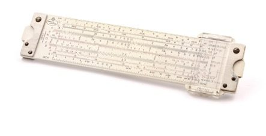
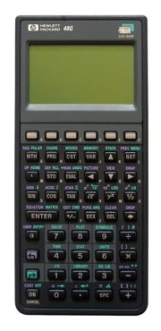
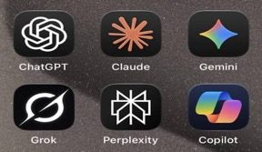
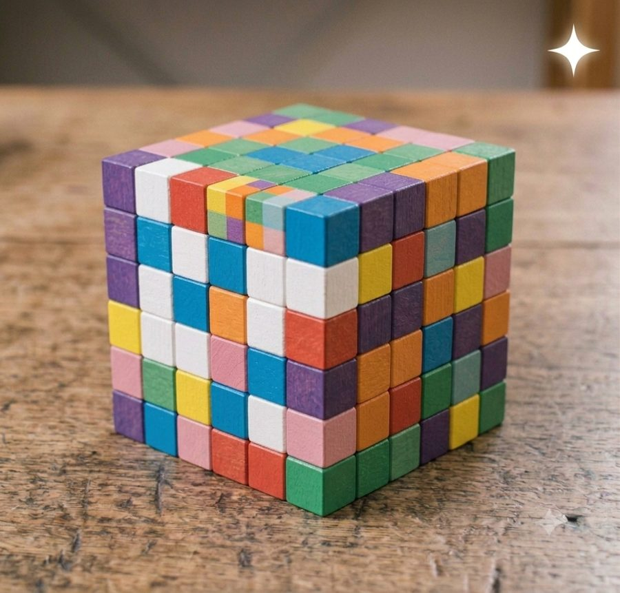

IA en Ingeniería Civil · ETSI Caminos ·
GeoOceanIA en Ingeniería Civil · ETSI Caminos ·
GeoOcean
IA en Ingeniería Civil · ETSI Caminos ·
GeoOceanIA en Ingeniería Civil · ETSI Caminos ·
GeoOcean


Formación del profesorado
Punto de partida

Regla de cálculo Calculadora
científica
Calculadora
científica
Calculadora programable
IAEntra un número, sale un número. Misma entrada, mismo resultado: determinista.
Entra una pregunta; sale texto, código, imágenes, audio… Misma pregunta, respuestas distintas: hay que comprobarla.
La propuesta para la Escuela
Materias básicas (matemáticas, física, dibujo) y tecnológicas. Ejemplo: en QGIS, MDT → algoritmo → red de ríos.

En cada asignatura tecnológica: encadenar varios bloques, con flujos iterativos y de optimización.

Puente (geotecnia, estructuras, construcción) · Inundación urbana (estadística, geomática, hidrología, hidráulica) · Ciudad · Carretera.
El lenguaje común para hablar con la IA: notebooks de Python en Jupyter.